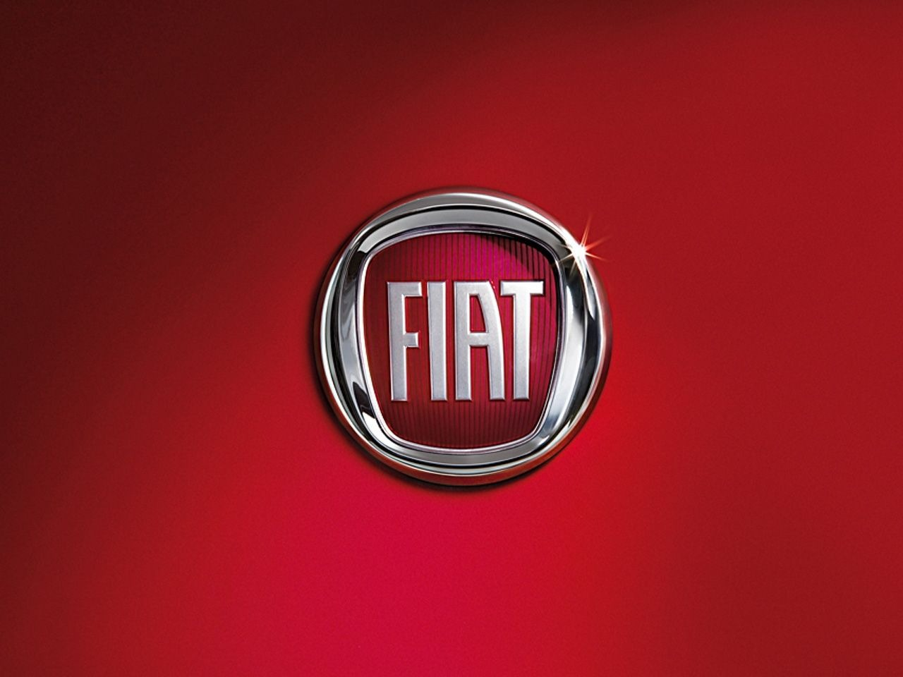
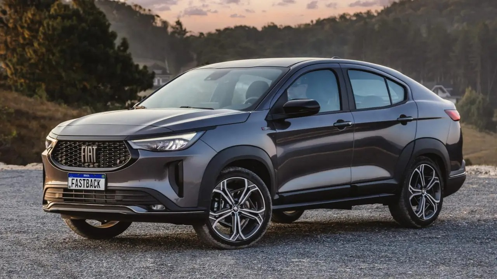

A Fiat é uma marca italiana de automóveis fundada em 1899. Ao longo dos anos, a Fiat se estabeleceu como uma das principais marcas de carros na Europa e em todo o mundo.
Uma das características distintivas da Fiat é sua habilidade em criar carros compactos e econômicos, que são populares em países com restrições de espaço e impostos mais elevados sobre veículos maiores. O Fiat 500 é um exemplo icônico dessa abordagem, com seu design moderno e retro, tornando-se um sucesso instantâneo quando foi relançado em 2007.
A Fiat também tem uma forte presença no mercado de veículos comerciais, produzindo vans e caminhões leves usados para transportar cargas em áreas urbanas e suburbanas. Além disso, a marca tem sido um grande participante em competições automobilísticas, ganhando corridas e campeonatos em várias categorias.
Nos últimos anos, a Fiat tem se concentrado cada vez mais na inovação e sustentabilidade, com uma ampla gama de veículos elétricos e híbridos, bem como tecnologias avançadas de assistência ao motorista, incluindo sistemas de direção autônoma.
Embora a Fiat tenha enfrentado desafios econômicos e de reputação ao longo de sua história, a marca tem uma rica herança de inovação, criatividade e estilo. A Fiat continua a ser uma marca líder na indústria automotiva global, buscando oferecer soluções de mobilidade modernas e sustentáveis.